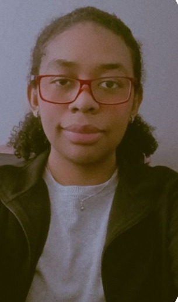

About Me

Personal Information
Name: Adriana Sofia Espinoza Chicaiza
Degree Program: Computer Science
Semester: Seventh Semester
I am a Computer Science student with a strong interest in technology, programming, artificial intelligence, and mathematics. I enjoy learning new concepts, solving problems, and developing projects that allow me to apply the knowledge I gain at university.
I consider myself a curious and organized person who enjoys learning through both theory and practice. Working on academic projects has helped me improve my problem-solving skills and understand how computer science can be applied to real-world situations.
One of my main goals is to continue developing my technical skills and gain more experience creating useful applications with modern technologies.
Academic Interests
During my studies, I have developed an interest in several areas of computer science and mathematics. These subjects motivate me to continue learning and exploring new technologies.
- Artificial Intelligence
- Web Development
- Mathematics
- Technology and Finance
My Academic Goals
My goal is to strengthen my knowledge of computer science and gain practical experience through academic and personal projects. I want to improve my programming skills, learn more about artificial intelligence, and understand how technology can be used to solve practical problems.
- Improve my programming and problem-solving skills.
- Learn more about artificial intelligence.
- Develop useful web and software applications.
- Continue learning new technologies and tools.